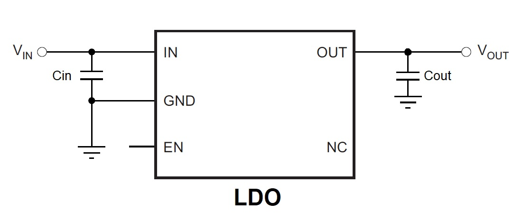

Introduction
In this course, we will explore the workings of the Low Dropout Regulator (LDO). LDOs are essential components in many power supplies, offering a simple solution for stepping down voltage in systems where low dropout and efficiency are important.
What is an LDO?
An LDO is a type of linear voltage regulator that provides a stable output voltage with a small difference between the input and output voltages, known as the dropout voltage. This allows LDOs to be more efficient and generate less heat in low-power applications.
Key Characteristics of LDOs
- Input and Output Voltages: The input voltage must be higher than the output voltage by at least the dropout voltage for proper operation.
- Dropout Voltage: The minimum voltage difference between the input and output required for stable regulation.
- ESR (Equivalent Series Resistance): Affects stability and performance. Choose capacitors with low ESR for better noise rejection and stability.
- DC Bias: The voltage applied across the capacitor. It can affect the capacitance, especially in ceramic capacitors.
- Power Dissipation: As a linear regulator, the LDO generates heat. The power dissipation depends on the difference between the input and output voltages and the current passing through.
- PSRR (Power Supply Rejection Ratio): How well the LDO rejects noise from the input supply. A higher PSRR is essential in noise-sensitive applications.
- Inrush Current: The surge current when the LDO is first turned on. Managing inrush current is critical for stable operation.
Course Learning Outcomes
By the end of this course, you'll have the confidence and knowledge to design a highly efficient and reliable LDO regulator for your projects.
Price of the Course:
For Self-Learning: 50€
For Private Appointment (One-on-One): 100€
← Back to Home
